インタラクション技術の実践的開発プロセス
2009年5月17日初版-(本当は4章で扱っていた)-6/2-(辛い日々)-6/11-(Mouseだけで1本化)-6/13脱原稿
白井暁彦+小坂崇之
目次
この章では第4章で学んだWiimoteLibによる赤外線センサー機能をさらにすすめて、.NETによるマウス制御プログラム「WiiRemoteMouse」を開発します。実践的な開発プロセスを通して、応用できるWiiRemote利用インタラクティブ技術を体験し、次章の「演習問題」へのステップとします。
ところでマウスといえば、既に第3章で「GlovePIE」を使って高機能なマウスをスクリプティングで実現しました。ここではこれをプロトタイプとして、.NET環境における高度なアプリケーション開発をステップを追って解説していきます。単にGlovePIEでできることを.NETに移植しても面白くないですから、特に、ここでは第4章では扱わなかった.NETの開発手法や独自クラスの作成、外部DLLの取り込み、グラフィックスやユーザビリティを向上させるチューニングなども実際の開発を通して解説します。
仕様と開発の流れの整理
今回開発するマウス操作プログラム「WiiRemoteMouse」で利用する基本技術の多くは、いままで学んだ技術の組み合わせです。最終的には、皆さんで新しい機能を追加したくなるようにできており、比べて大きなプログラムになっていくことでしょう。第4章では、小さな機能の確認のために入り交じったコードを書いていましたが、このコーディングスタイルのまま大きなプログラムになっていくと、可読性が悪い、ごちゃ混ぜになったプログラムコードになっていくことが予想されます。このようなプログラムは俗称「スパゲティコード」と呼ばれます。個人での開発はともかくとして、チームでの開発においては、可読性やデバッグのしづらさから、プロジェクトの進行を困難にする原因にもなります。
今回取り組む「WiiRemoteMouse」のように「一気に書き上げることができない中規模〜大規模のプログラム」を開発するときは、まずは一旦、プログラミングから離れ、やりたいことや、実現したいインタラクション、課題など、「仕様」を簡単に書き出します。そこから実装する単位や順番を表などまとめ、関数やクラスといったまとまった処理の単位で開発を進めていくと比較的うまくいきます。
はじめて使う技術の開発であれば「行き詰まってから仕様を再考」という手法でも良いのですが、今回は既に第3章4節「GlovePIEでつくる『高機能マウス』」や、第4章9節「赤外線センサーを使う」において基本となる技術は実験済みですので、今回の「WiiRemoteMouse」の開発では、特に実装する機能と流れ、プライオリティ(優先順位)を、以下のようにまとめてみることができるのではないでしょうか。
「WiiRemoteMouse」の概要設計
| プライオリティ |
WiiRemote側入力 |
機能 |
| 1 |
赤外線とボタンの状態 |
フォームに描画 |
| 2 |
赤外線ポインタの移動 |
マウスポインタの移動 |
| 3 |
[A]ボタン |
マウス左ボタン |
| 4 |
[A]ボタン長押し |
マウス右ボタン |
| 5 |
バッテリー残量 |
LEDに電池残量レベル表示 |
もっともっと、盛り込みたい機能もあるとおもいます。例えばランチャーや、キー入力の代わりなど、既に学習した機能を他のボタンに割り当ててみても良いでしょう。表の下の方にプライオリティとともに書き足してみてください。この作業を一般的に「概要設計」といいます。どういうことがしたい、という「概要」を今のうちに設計しておきます。
人間中心：インタラクティブ技術設計のヒント
本書はプログラミングの本なのですが「インタラクティブ技術」については少しだけ深く、体系的にあつかっています。
このセクションで行う「概要設計」とは、まさにインタラクティブ技術の核となる重要なポイントです。今回は「実装したい機能」を表に書き出して、プライオリティをつける…という方法を採用しましたが、これは全ての場合において推奨するやり方ではなく、むしろ「解説のために仕方なく」一般的なソフトウェア開発手法の流れをとりました。
インタラクティブ技術における概要設計に重要なことは「想像すること」です。機能的な制限や「WiiRemoteにこういう機能があるから...」といった「機能指向(functionally-oriented)」の設計ではなく、これから「開発する何か(something)」が、「どんな体験(experience)」をユーザーに与え、この体験を通して「どんな可能性(possibilities)」を感じて、「どんなリアクション(reaction)」につながるのか。まずはここに想像力を使う努力をしてください。つまり、時間をかけてください。
同じ分野で「ユーザーインターフェースデザイン」という考え方があります。人間中心デザイン(HCD:Human Centered Design)やユーザビリティ向上のための評価手法や設計手法などは、近年はWebやGUI(Graphical User Interface)のインターフェース設計などを中心に、以前よりもはるかに体系的に整備されてきています。例えば国際標準規格「ISO13407」に「Human-centred design processes for interactive systems(インタラクティブシステムの人間中心設計過程)」として規定されています。
国際規格というと、難しく感じるかもしれませんが上で書いたとおり、「機能ではなく人間中心」に考えることです。設計の初期で具体的なユーザーや、そこで起こりうる体験を「想像」し、そして実際に作ったモノとユーザーの状況を観察し、繰り返し設計を行う…というプロセスになります。
こういったユーザーインターフェースデザインの改良を企業として実践し、成果を上げている企業もあります。こちらのWebサイトには、この話題に関して役に立ちそうな本が沢山紹介されています。
■ソシオメディア社
https://www.sociomedia.co.jp/category/books
実際に実装する機能とその順番が決まりましたので、次は処理の単位ごとに開発の流れを考えます。これを一般的には「計画」と言います。もちろん始めて体験する人にとって、先のことは見通しがつきませんから「いま想定している流れ」でかまいません。書き出してみます。
- プロジェクトの新規作成とフォームデザイン
- 初期コードの作成
- フォームのイベント処理
- 赤外線でマウスカーソル移動
- 押されたボタンに対する処理
- フォームやLEDによる装飾
「概要設計」や「計画」をほんの少し意識する習慣をつけるだけで、プロジェクトの進行は大きく変わります。ここでは「概要設計」と簡単な計画を作成しました。実際のプロジェクトでは、ここに「期日」、「見通しのついていない技術」、「実験と評価」、「設計の見直し」などを盛り込んでいくと、よりプロジェクトらしくなっていきます。「概要設計」をより詳細な画面イメージや機能、実装する上でのパラメーター、たとえば「長押し」が何秒押すことなのか、などを盛り込んでいくと「詳細設計」になります。
本書はWiiRemoteにおけるプログラミング解説とその独習が目的なのでここまでのレベルにとどめておきます。興味のある人は「プロジェクトマネジメント」について書店の実用書コーナーを探してみると良いでしょう。プログラミングから業務のプロジェクトまでさまざまな実用書があるはずです(検定試験もあります)。実はIT用語のプロジェクトマネジメントと、ビジネス用語のプロジェクトマネジメントは意味するところと扱う範疇がずいぶんと異なりますが、いずれにせよ「立ち読みしてみて役に立つ実用書」なら、買って読んでみても損はないでしょう。
プロジェクトの新規作成とフォームデザイン
まずは復習もかねて、新しいプロジェクトを作成します。赤外線センサーの入力を受信してフォームに描画するプログラムを作りましょう。第4章9節3で紹介した赤外線4点検出による「座標の描画」プログラムをベースにして、改変しても良いのですが、復習もかねてポイントを流れで説明しますので実際に手を動かしてみてください。
まずC#.NET2008で新規プロジェクトを作成します。「Visual C#」→「Windowsフォームアプリケーション」でプロジェクト名を「WiiRemoteMouse」とします。ソリューションエクスプローラーにある「参照設定」を右クリックし、参照の追加で「最近使用したファイル」から「WiimoteLib.dll」(バージョン1.7.0.0)を選択します。「表示」→「ツールボックス」を選び、「Form1」に対して2つのボタンを配置しTextプロパティを「接続」、「切断」とします。配置したボタン2つをそれぞれダブルクリックして、ボタンを押したときのイベントを自動生成します。また「Form1」にPictureBoxを配置しサイズを「256, 128」に設定します。デバッグ用の文字列を表示する場所として「Label1」を配置します。
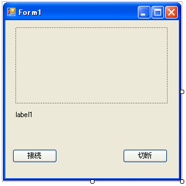
まずはスタート地点となる「最小の状態」になるまでコードを整理しましょう。コードの上で右クリックし「usingの整理」→「未使用のusing」の削除とすることで、using宣言にある必要ないクラスは削除することができます。必要なクラス「WiimoteLib」を書き足します。これを最初の一歩とします。
最小コード(Form1.cs)[C#]
using System;
using System.Drawing;
using System.Windows.Forms;
using WiimoteLib;
namespace WiiRemoteMouse {
public partial class Form1 : Form {
public Form1() {
InitializeComponent();
}
private void button1_Click(object sender, EventArgs e) {
}
private void button2_Click(object sender, EventArgs e) {
}
}
}
ここまでのステップで間違いは起きないはずですが、確認のため一度[F5]キーで実行しておく癖をつけておくと良いでしょう。正しくフォームが表示されたら終了し、プロジェクト全体を保存します。「ファイル」→「全ての保存」として「C:\WiiRemote」にソリューション名「WiiRemoteMouse」で保存しましょう。
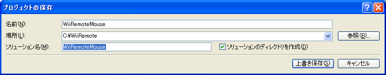
基本コード
それでは、第4章9節「赤外線センサーを使う」で開発したコードを参考にして、以下のような基本コードを作成しましょう。
基本コード(Form1.cs)[C#]
using System;
using System.Drawing;
using System.Windows.Forms;
using WiimoteLib; //WimoteLibの使用を宣言
namespace WiiRemoteMouse {
public partial class Form1 : Form {
Wiimote wm = new Wiimote(); //Wiimoteクラスを作成
Boolean isConnected = false; //WiiRemoteが接続されたか
public Form1() {
InitializeComponent();
//他スレッドからのコントロール呼び出し許可
Control.CheckForIllegalCrossThreadCalls = false;
}
//WiiRemoteの状態が変化したときに呼ばれる関数
void wm_WiimoteChanged(object sender, WiimoteChangedEventArgs args) {
WiimoteState ws = args.WiimoteState; //WiimoteStateの値を取得
DrawForms(ws); //フォーム描写関数へ
}
//フォーム描写関数
public void DrawForms(WiimoteState ws) {
//グラフィックスを取得
Graphics g = this.pictureBox1.CreateGraphics();
g.Clear(Color.Black);//画面を黒色にクリア
g.Dispose();//グラフィックスの解放
}
//接続ボタンが押されたら
private void button1_Click(object sender, EventArgs e) {
wm.Connect(); //WiiReoteの接続
wm.WiimoteChanged += wm_WiimoteChanged; //イベント関数の登録
//レポートタイプの設定
wm.SetReportType(InputReport.IRAccel, true);
}
//切断ボタンが押されたら
private void button2_Click(object sender, EventArgs e) {
wm.WiimoteChanged -= wm_WiimoteChanged; //イベント関数の登録解除
wm.Disconnect(); //WiiRemote切断
wm.Dispose(); //オブジェクトの破棄
}
}
}
コンパイルして動作確認をします。Form1の冒頭でWiiRemoteの接続状態を管理する変数「Boolean isConnected」を宣言しています。今回レポートタイプは「IRAccel」、つまり『赤外線＋加速度センサー』とします。「IRExtensionAccel」でも良いのかもしれませんが、ここでは拡張端子を使う予定はありませんので、最適なモードを選択しておきましょう。
コードのブロック化と関数化
ここで、今後大規模になっていくであろうこのプログラムの全体の構造を整理しておきたいとおもいます。この段階でのコーディングは初期化など基本的なところだけにとどめ、個々の機能の実装に入る前に、一拍おきましょう。まずはディープなコーディングを始める前に、簡単なコメントを書いておくくことが大事です。さらに事前に「こういう機能を実装したい、する予定」というブロックや関数にまとめておくことで、全体の見通しを良くします。
#regionによる処理のブロック化
まず処理のブロック化を学びましょう。Visual Studioでは、プログラムコード中に「#region〜#endregion」と書くことで、コードをブロック(=ひとつのカタマリ)ごとにわけることができます。このブロックごとにVisual Studioコードエディタのアウトライン機能を使用して、展開や折りたたみができるようになります。
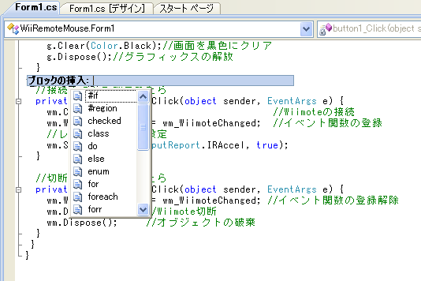
使い方も簡単で、ブロックを挿入したいプログラムの行で右クリックして「ブロックの挿入」で「#region」を選択するだけです。ここでは上記の基本コードにおける、フォームの接続ボタンと切断ボタンのブロックに対して「フォームのボタン処理(接続・切断)」という名前をつけましょう「#region」を選んで、名前をつけます。
「ブロックの挿入」を選び、何も設定しないと下のようなコードが挿入されます。
#region MyRegion
#endregion
名前をつけ間違えても、場所を間違えても問題ではありません。「#region」はあくまでC#のプログラムに書かれた「補足的な情報」であり、ビルド時、最終的には無視されますから、気軽に使って良いのです。では「フォームのボタン処理(接続・切断)」をまとめるために正しい場所に書いてみましょう。
「フォームのボタン処理(接続・切断)」のブロック化(Form1.cs)[C#]
#region フォームのボタン処理(接続・切断)
//接続ボタンが押されたら
private void button1_Click(object sender, EventArgs e) {
wm.Connect(); //WiiRemoteの接続
wm.WiimoteChanged += wm_WiimoteChanged; //イベント関数の登録
//レポートタイプの設定
wm.SetReportType(InputReport.IRAccel, true);
}
//切断ボタンが押されたら
private void button2_Click(object sender, EventArgs e) {
wm.WiimoteChanged -= wm_WiimoteChanged; //イベント関数の登録解除
wm.Disconnect(); //WiiRemote切断
wm.Dispose(); //オブジェクトの破棄
}
#endregion
}
}
表示を折りたたむには、コードの左側(行頭)にある小さな「−」をクリックすると、コードブロックを隠すことができます。
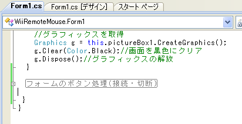
なお「#endregion」を挿入する場所に注意してください。近所にある「}」(関数の終わり)の位置を間違えてもプログラムは動きますし、コードブロックを折りたたむときも全くエラーは起きませんが、自分があとでコードを読むときに大変なので、習慣として気を遣いましょう。
処理の関数化
ブロック化の基本を学んだら、次はWiiRemoteの状態が更新されたときに呼ばれるコールバック関数「wm_WiimoteChanged()」をこれから実装する処理の単位でブロックに分解していきます。それぞれの機能単位で関数を作り、ブロックと空(カラ)の関数を用意しておきます。以下の通りにコードをブロック化してみてください。
プログラムの関数化とブロック化(Form1.cs)[C#]
＜前略＞
#region WiiRemoteの状態が変化したときに呼ばれる関数
void wm_WiimoteChanged(object sender, WiimoteChangedEventArgs args) {
if (isConnected == true) {
WiimoteState ws = args.WiimoteState; //WiimoteStateの値を取得
DrawForms(ws); // フォーム描画関数へ
IR_Cursor(ws); // 赤外線でマウスカーソル移動
Events(ws); //ボタンイベント処理(ダミー関数)
EffectsOut(ws); // LED・装飾
} else {
//切断
this.wm.SetLEDs(0); // LED消灯
this.wm.SetRumble(false); // バイブレーター停止
this.wm.Disconnect(); // WiiRemoteと切断
this.wm.Dispose(); // オブジェクトの廃棄
}
}
#endregion
#region ボタンイベント開発用
public void Events(WiimoteState ws) {
}
#endregion
#region フォーム描画関数
public void DrawForms(WiimoteState ws) {
//グラフィックスを取得
Graphics g = this.pictureBox1.CreateGraphics();
g.Clear(Color.Black);//画面を黒色にクリア
g.Dispose();//グラフィックスの解放
}
#endregion
#region 赤外線でマウスカーソル移動
public void IR_Cursor(WiimoteState ws)
{
}
#endregion
#region LED・装飾
public void EffectsOut(WiimoteState ws) {
}
#endregion
#region フォームのボタン処理(接続・切断)
＜以下略＞
空っぽの関数を書くのは不安があるかもしれませんが、これでも問題なくビルドは通ります。確認しておきましょう。
途中「Events(ws);」について「ダミー関数」とコメントしておきました。これはWiiRemoteがもつそれぞれのボタンイベントを処理する関数を想定しています。後々大規模になることが予想されるのと、クラスとしてあとで再利用できそうなので、Form1.csではなく、別に新しいクラスオブジェクトを作成して実装する予定です。今の段階では『別クラスにしたらいいか、見通しつかないよ！』という状態なので「Events()」という仮の関数で実装し、あとで別のクラスに移植していきます。
「#region」を使うことで、コメントと統合できて、見やすくなりました。Visual Studioでは関数単位も行頭にある「−」をクリックすることで隠す事ができますが、本書の以下の解説ではブロック単位で解説しますので、#region〜#endregionの位置はしっかり設定しておいてください。
「人間中心コーディング」を料理にたとえると…
ゲーム開発などにも代表される多くのインタラクション技術を使ったプログラムは「スパゲティコード」になりがちです。書いた本人に聞くと、主な理由は「(これに関して)教科書とかないし…」という回答が多いのですが、前のコラムでも紹介したとおり、教科書は沢山出ています。
ポイントは「ユーザーインターフェースデザインには開発のループがある」ということを見極めているかどうか、かもしれません。操作感や体験の印象に直結する「人間中心」の機能を実装するのですから、コーディング→テスト→チューニング→追加機能というループの中に「人間中心」が入ってきます。
このようにインタラクティブ技術とは「人間」が間に入る技術です。そのため「機能」が中心になる業務アプリケーションの一般的開発手法のように「これだ」と決め打ちで仕様を作り、その通りに作っても、実際にでき上がったものを人間が触って、そこからもう一度、理想的なインタラクションになるよう、レビューと設計、フィードバックを繰り返さなければ、完成度の高い体験や、表現したい世界はなかなか伝わりません(とはいえ業務アプリケーションも「銀行のATM」のように人間中心で考えるべき要素は多分にあります)。
なんとなくプログラミングしていると自然とスパゲティ化するインタラクション技術を、混乱無くコードに落とし込めるよう、本書では五月蠅いぐらいに丁寧に説明しています(中級プログラマにとっては回りくどく感じることでしょう！)。本書で解説しているコーディングスタイルも「完璧」というものではありませんし、ここで解説しているブロック化やクラス化も、ただ分割すればいいというものでもありません。
少なくとも言えることは、このようなインタラクション開発プロジェクトの見通しを良くするには、一気に作ったスパゲティを「茹で続ける」よりも、実現したい機能を空っぽのまま配置して、ひとつひとつ実験と評価をしながら順に解決していく方法が役に立つ、ということです。ちょうどコース料理の「皿の構成」を先に考えて、そこから『どういう順番で料理するべきか？』を考えるようなものでしょう。場合によってはコースの途中で、お客さんの反応を見て料理を差し替えることも考えなければなりません。
そういう意味では、ユーザーに対して『いま作るべき料理は、スパゲティかコース料理か？デザートはあるのか？』を、まず作り手が理解している必要があります。ここに時間を割かないと、スパゲティどころか、お客さんの顔も見ないで突然「ドンブリに盛った闇鍋」がでてくることになるかもしれません。
フォームのボタン処理
ブロック化することでコードが見やすくなりました。しかしこの状態でプログラムを実行すると、様々な不具合が残っているはずです。慌てず、ひとつづつ片付けていきましょう。
まずはプログラムが起動したあとのフォームのイベント処理を整理しながら実装していきましょう。現在の状態ではWiiRemoteへの「接続」と「切断」が丁寧ではないので、「isConnected」というbool型の変数を用意して、接続状態を管理していきます(WiimoteLibにもこれにあたるプロパティがあってもよさそうなものなのですが、現状のWiimoteLibの設計では個々のアプリケーション側で実装する方がよさそうです)。
フォームのボタン処理(Form1.cs)[C#]
#region フォームのボタン処理(接続・切断)
//接続ボタンが押されたら
private void button1_Click(object sender, EventArgs e) {
if (this.isConnected == false) {
this.wm = new Wiimote(); //WiiRemoteの初期化
this.wm.Connect(); //WiiRemote接続
this.wm.SetReportType(InputReport.IRAccel, true); //リポートタイプの設定
this.wm.SetLEDs(0); //LED を消す
this.wm.SetRumble(false); //バイブレータストップ
this.button1.Enabled = false; //接続ボタンを無効
this.button2.Enabled = true; //切断ボタンを有効
this.wm.WiimoteChanged += wm_WiimoteChanged; //コールバックを登録
this.isConnected = true; //接続状態をtrue
}
}
//切断ボタンが押されたら
private void button2_Click(object sender, EventArgs e) {
if (this.isConnected == true) {
this.wm.WiimoteChanged -= wm_WiimoteChanged; //コールバックを削除
this.button1.Enabled = true; //接続ボタンを有効
this.button2.Enabled = false; //切断ボタンを無効
this.isConnected = false; //接続状態をfalse
}
}
#endregion
フォームのボタンが押されたとき、「isConnected」を確認し、もしまだ接続されていないなら、接続処理、リポートタイプの設定、そしてコールバック関数を登録して、変数「isConnected」をtrueにします。
同様に「切断」ボタンが押されたときは既に接続されているWiiRemoteオブジェクト(wm)に登録されたコールバック関数を削除しています。
フォーム上の「接続」や「切断」ボタンは「Enabled=false」とすることで無効化、つまり「押せない状態」にすることができます。このようにどちらかを押すと、どちらかの値が排他的に変わる、部屋の照明のようなボタンを「トグル(toggle)」といいますが、それをソフトウェアで実装していることになります。
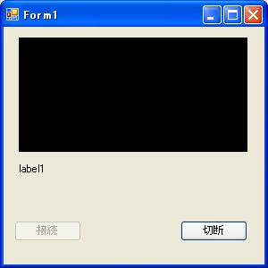
「はじまり」と「おわり」をワンセットに
本書では原理や動作を中心に解説していますので、ユーザーの不意の終了やWiiRemoteの電池切れ、その他エラー処理などは(要所要所で説明してはいますが)完全には扱い切れていません。皆さんがフリーウェアなど、自分のプログラムを『幅広い、誰か』に使ってもらうには特に気を遣った方が良いでしょう。
習慣として「初期化-終了」、「オブジェクトの追加-削除」はワンセットでコーディングしていくと思わぬミスの軽減に役立ちます。特にC#の場合は、ユーザーフレンドリーに設計された言語環境なので、削除を自動で実施してくれる仕組みがあります。意識して使うことができればエレガントなのですが、逆に「作りっぱなし、削除は…何だっけ」というプログラミングスタイルが板につくと、オブジェクトのスコープ(生存期限)が見えづらくなり、プログラムの動作自体は完成しているのに、残存するオブジェクトのおかげで不明のエラーを実行時に起こしたり、長時間起動しておくとメモリリーク(メモリ漏れ)を起こし、挙動が突然遅くなったり、クラッシュしたりする『あとあと手のかかるプログラム』を生み出します。
特にオブジェクトの終了や破棄は忘れがちです。WiimoteLibのように誰かが作ったライブラリの場合は単に「終了」というAPIがあっても、内部で何をやっているかわからない場合もあります。コーディングの流れ上「いまここで終了して良いかわからない」といったときもあるでしょう。そんなときは「//To俺：ここで破棄？」など『未来の自分宛』にコメントを入れておくことで、後々のコード整理の時に見事に役に立ったりします。
赤外線センサーによるマウスポインタ移動
次は赤外線センサーを利用して、マウスポインタを動かす部分の実装をします。いきなりマウスを動かす部分を実装してもいいのですが、赤外線の状況が見えないと開発が難航しますので、まずはフォーム描画関数「DrawForms()」に手を加えて赤外線がWiiRemoteの視界に入ったら、グラフィックスと文字で測定値を表示するようにします。
フォーム描画関数DrawForms(Form1.cs)[C#]
#region フォーム描画関数
public void DrawForms(WiimoteState ws)
{
//グラフィックスを取得
Graphics g = this.pictureBox1.CreateGraphics();
g.Clear(Color.Black);//画面を黒色にクリア
//もし赤外線を１つでも発見したら
if (ws.IRState.IRSensors[0].Found)
{
//赤色でマーカ0を描画
g.FillEllipse(Brushes.Red,
ws.IRState.IRSensors[0].Position.X * 256 ,
ws.IRState.IRSensors[0].Position.Y * 128 , 5, 5);
//青色でマーカ1を描画
g.FillEllipse(Brushes.Blue,
ws.IRState.IRSensors[1].Position.X * 256,
ws.IRState.IRSensors[1].Position.Y * 128, 5, 5);
}
g.Dispose();//グラフィックスの解放
label1.Text = "IR[0] " + ws.IRState.IRSensors[0].RawPosition.ToString()
+ "\nIR[1] " + ws.IRState.IRSensors[1].RawPosition.ToString();
}
#endregion
赤と青、2つのポインタを小さめに表示しています。フォームの「label1」に表示されるテキストや、座標の方向など「見え方」について、お好みで改良していただいてかまいませんが、最後に「装飾」として大幅拡張する予定です。このステップではあまり気にせず、先に進みましょう。
次はマウスポインターを赤外線で動かせるようにします。まず、初期化コードの中に、変数「ScreenSize」を追加しましょう。
初期化コードにScreenSizeを追加(Form1.cs)[C#]
Wiimote wm = new Wiimote(); //Wiimoteクラスを作成
System.Drawing.Point ScreenSize; //|画面サイズを格納
Boolean isConnected = false; //WiiRemoteが接続されたか
次に、関数「IR_Cursor」を実装します。これは赤外線の位置にあわせて、マウスポインタを移動させるコードです。
赤外線でマウスカーソルを移動(Form1.cs)[C#]
#region 赤外線でマウスカーソル移動
public void IR_Cursor(WiimoteState ws)
{
ScreenSize.X = Screen.PrimaryScreen.Bounds.Width; //画面サイズ横幅
ScreenSize.Y = Screen.PrimaryScreen.Bounds.Height; //画面サイズ縦幅
//もし赤外線を1つ発見したら
if (ws.IRState.IRSensors[0].Found) {
//赤外線座標(0.0〜1.0)を画面サイズと掛け合わせる
int px = (int)(ws.IRState.IRSensors[0].Position.X * ScreenSize.X);
int py = (int)(ws.IRState.IRSensors[0].Position.Y * ScreenSize.Y);
//X座標を反転させる
px = ScreenSize.X - px;
//マウスカーソルを指定位置へ移動
System.Windows.Forms.Cursor.Position = new System.Drawing.Point(px, py);
}
}
#endregion
取得した赤外線マーカーの1個目のX,Y座標をマウスカーソルの位置に設定しています。System.Drawingに用意されている2次元の点を扱う型Point(px,py)をつかって、マウスカーソル位置を変更するためSystem.Windows.Cursor.Poitionに代入しています。
早速実験してみましょう。WiiRemoteをBluetooth接続し、センサーバーなどの赤外線光源を準備してから[F5]キーを押してデバッグ開始します。表示されたフォームの「接続」ボタンを押し、問題なく接続されたら、WiiRemoteを赤外線光源に向けてください。
少なくとも1点でも赤外線が検出されるとフォーム内に赤いマーカーが表示され、Windowsのマウスカーソルが手の動きにそって移動します(右に動かせば、右にマウスカーソルが動くはずです)。赤外線を検出している間は、PCに接続されているマウスを触っても思い通りに動かすことはできません。
なお、実行時にマウスカーソルがバタバタする場合があります。赤外線センサーの状態や複数のマーカーがWiiRemoteの視界に入っていることに起因する不安定な検出状態によるものです。WiiRemoteとセンサーバーとの距離を2m程度まで離してみたりすると安定になりますが、後ほどコードの見直しとチューニングを実施しますので、特に今は気にしなくてもよいでしょう。
終了する場合は、赤外線を検出しないようにする(センサー部分を下にして立てるとお洒落です)と、マウスの制御が戻りますので。「切断」ボタンを押してから終了させてください。マウスカーソルに頼らず、[TAB]キーを数回押し、[Enter]キーで「切断」を入力する事でも、簡単に終了することができます。
ボタンイベントの検出
次はボタンイベントです。先ほどは空っぽにしていたボタンイベントを処理するダミー関数「Events()」を実装していきましょう。
ボタンイベントと簡単に言っても、WiiRemoteのボタンはたくさんありますし、マウスやWiiRemoteに付いているデジタル入力ボタンには以下の「3つの状態」があります。
【DOWN】…ボタンを押した状態(Push)。
【HOLD】…DOWN後、ボタンを押しっぱなしにしている状態(Press)。
【UP】…ボタンを離した状態(Release)。
これらを内部できっちり処理しないと、ダブルクリックなどを検出するのは難しくなります。
概要設計に従って、WiiRemoteの[A]ボタンに対して以下のマウス動作を割り当てることにします。
・Aボタンが押されると(DOWN)、マウスの左クリックを発行します。
・Aボタンが長押しされると(HOLD)、マウスの右クリックを発行します。
・Aボタンが離されると(UP)、マウスボタンを押していない状態にします。
「長押し(HOLD)」は1秒間押しっぱなしにすること、としておきましょう。
メッセージボックスを使ったテスト
まずは確実に長押しイベントが拾えるように「メッセージボックス」を使って確認します。
[A]ボタンHOLDによるメッセージボックスの表示(Form1.cs)[C#]
＜初期化部分に追加＞
//ボタンイベント開発用
bool isDown;
int StartTime, PressTime = 1000;
string State = "";
＜中略＞
#region ボタンイベント開発用
public void Events(WiimoteState ws) {
if(ws.ButtonState.A) {
if (isDown == false) {
//もしも初めてボタンが押されたとき
StartTime = System.Environment.TickCount; //押された時間を記録
State = "DOWN"; isDown = true;
} else {
//押されている時間がPressTimeより長ければHOLD
if ((System.Environment.TickCount - StartTime) >= PressTime) {
State = "HOLD"; //押され続けている
//メッセージボックスを表示
MessageBox.Show(State);
}
}
} else {
if (isDown == true) { //ボタンが離された
State = "UP"; isDown = false;
}
}
}
#endregion
この段階でテストをしてみましょう。プログラムを起動して接続し、[A]ボタンを押しっぱなしにして1秒まつと、「HOLD」と書かれたメッセージボックスが表示されます。
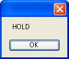
MessageBox.Show()で利用できる「メッセージボックス」はこの種のデバッグや開発に非常に役に立ちます。ここではもう確認が終わりましたので、この行はコメントアウトもしくは削除してしまって問題ありません。
デバッグテクニック
プログラムの動作を確かめるために、デバッグが必要になることがあります。Visual Studioの標準機能では[F9]を押すことでブレークポイントを挿入することができます。しかしプログラムを止めるまでもなく、ちょっとした値を見たいときなどもあります。
今回紹介した「メッセージボックス」以外のテキスト表示の方法として、C#では「Console.WriteLine()」を使ってメッセージを出力することができます。この出力結果はVisual Studio上の標準出力「表示(V)→出力(O)」で見ることができます。(なお同様の関数がC++にもありますが、なぜかVisual C++上で出力ウィンドウを見ても出力されないようです…)。
このようなちょっとしたテクニックは知っていると便利です。ただし実行時はパフォーマンス低下を産む場合もあるので、最終的なバージョンでは忘れずにコメントアウトしておくか、「#if DEBUG〜#endif」ディレクティブを使うことでデバッグ版だけコードを活かすこともできます。
デバッグテクニックは、インタラクションを向上させる為のこまめな実験や評価、チューニングに非常に役に立ちます。
ボタンイベント処理のクラス化
続いて、WiiRemoteのボタンダウンにあわせて、マウスボタンのイベントを発行します。プログラムが長くなってしまいますので、これからボタンイベントの検出を別の.csファイルの別クラスに移植します。
新しいクラスの追加
まずVisual Studioの「プロジェクト」から「新しい項目の追加」(Ctrl+Shift+A)を行います。
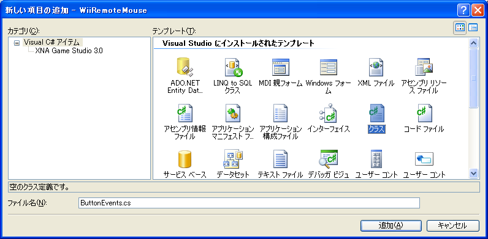
「テンプレート」で「クラス」を選びファイル名を「ButtonEvents.cs」として「追加」を押します。プロジェクトエクスプローラーに「ButtonEvents.cs」が追加され、以下のような初期コードが表示されるはずです。
初期コード(ButtonEvents.cs)[C#]
using System;
using System.Collections.Generic;
using System.Linq;
using System.Text;
namespace WiiRemoteMouse
{
class ButtonEvents {
}
}
このままでは何もおきませんので、いままでコーディングの中心になっていた「Form1.cs」からEvents()関数のコードと変数を移植します。「#region」も忘れずに記述しておきましょう。
Form1.csから移植したコード(ButtonEvents.cs)[C#]
using WiimoteLib;
namespace WiiRemoteMouse
{
class ButtonEvents {
bool isDown;
int StartTime, PressTime = 1000;
string State = "";
#region ボタンイベント処理
public void Events(WiimoteState ws) {
if (ws.ButtonState.A) {
if (isDown == false) {
//もしも初めてボタンが押されたとき
StartTime = System.Environment.TickCount; //押された時間を記録
State = "DOWN"; isDown = true;
} else {
//押されている時間がPressTimeより長ければHOLD
if ((System.Environment.TickCount - StartTime) >= PressTime) {
State = "HOLD"; //押され続けている
//メッセージボックスを表示(確認用)
System.Windows.Forms.MessageBox.Show(State);
}
}
} else {
if (isDown == true) { //ボタンが離された
State = "UP"; isDown = false;
}
}
}
#endregion
}
}
移植したコードはForm1.csから削除、もしくはコメントアウトします。
Form1.csの変更部分[C#]
＜前略＞
namespace WiiRemoteMouse {
public partial class Form1 : Form {
Wiimote wm = new Wiimote(); //Wiimoteクラスを作成
ButtonEvents wbe = new ButtonEvents(); //ボタンイベントクラスを作成
＜以下の初期化は削除してかまいません＞
/*
//ボタンイベント開発用
bool isDown;
int StartTime, PressTime = 1000;
string State = "";
*/
＜ここで関数名の前にクラス名「wbe.」を追加します＞
wbe.Events(ws); //ボタンイベント処理
＜以下略＞
この段階でかならず動作試験を行ってください。[A]ボタンを長押しすると、メッセージボックスが表示されるはずです。
「ButtonEvents wbe = new ButtonEvents();」によってwbeというクラスを新規作成し、移植した関数(メソッド)「wbe.Events(ws);」をボタンイベントの処理として呼んでいます。
このようにソースコードを移植した後も問題なく実行できれば、複数のクラスをまたがるプログラムの作成に成功したといえます。
これで、ボタンイベント部分を別のクラスが記述されたソースコード「ButtonEvents.cs」に分けることに成功しました。いままでは全てForm1.csのForm1クラスに記述していたのですが、プログラムが巨大になったときや、複数のプログラマによるチームで開発するときには、適切なタイミングでクラスやファイルをわけていくことが重要です。
DLLインポートによるWin32APIの利用
次はWiIRemoteのボタンを押されたときに、マウスボタンのクリックイベントが発行されるべきパートのコードを書いていきます。この「マウスボタンイベントの発行」は単にマウスカーソルを動かすときと異なり少々複雑になります。まず.NET Framework3.5ではマウスカーソルの位置は変更できても、クリックするイベントを発行できるAPIが用意されていないようです。そこで旧来から存在するWin32プラットフォームSDKのWindowsユーザーインターフェースサービス「user32.dll」というDLLに含まれる「SendInput()」というAPIとSendInput()のための構造体を取り込むことで、この機能を実現します。
DLLインポートと構造体は、ある程度形式に沿った記述が必要です。ここでは「SendInput()」というAPIを取り込み、その関数の引数となる構造体「INPUT」とINPUTが利用するマウスイベントの詳細を記述する構造体「MOUSEINPUT」を取り込みます。
ButtonEvents.csへのDLLインポート[C#]
using WiimoteLib;
//DllImportに必要なusingを追加
using System;
using System.Runtime.InteropServices;
namespace WiiRemoteMouse {
class ButtonEvents {
bool isDown;
int StartTime, PressTime = 1000;
string State = "";
#region DLLインポート
[DllImport("user32.dll")] //DLL読み込み
extern static uint SendInput(uint nInputs, INPUT[] pInputs, int cbSize);
[StructLayout(LayoutKind.Sequential)]
struct INPUT {
public int type;
public MOUSEINPUT mi;
}
[StructLayout(LayoutKind.Sequential)]
struct MOUSEINPUT {
public int dx;
public int dy;
public int mouseData;
public int dwFlags;
public int time;
public IntPtr dwExtraInfo;
}
#endregion
＜以下略＞
この構造体はWin32(C++)のヘッダファイルである「WinUser.h」に記述されているものです。多少面倒ですが、間違えずに記述してください。なお、この構造体の定義をおろそかにすると、SendInputが正しく動いてくれません。
C#でマウスに希望のイベントを発行するときは、以下のようにしてイベントを送信します。
input[0].mi.dwFlags = 0x0002; //左マウスダウン
SendInput(1, input, Marshal.SizeOf(input[0])); //マウスイベントを送信
「Marshal」はアンマネージコードのメモリ割り当てのためなどに用意されたクラスです。DLLと構造体のインポートは記述さえ間違えなければ特に気負う必要はありません、そのまま下に続く、ボタンイベントの実装を行いましょう。
ボタンイベントへの実装(ButtonEvents.cs)[C#]
＜コメントの頭に「|」がついている箇所が新規追加部分です＞
#region ボタンイベント処理
public void Events(WiimoteState ws) {
INPUT[] input = new INPUT[1]; //|マウスイベントを格納
if (ws.ButtonState.A) {
if (isDown == false) {
//もしも初めてボタンが押されたとき
StartTime = System.Environment.TickCount; //押された時間を記録
State = "DOWN"; isDown = true;
input[0].mi.dwFlags = 0x0002; //|左マウスダウン
SendInput(1, input, Marshal.SizeOf(input[0])); //|イベントを送信
} else {
//押されている時間がPressTimeより長ければHOLD→右クリック
if ((System.Environment.TickCount - StartTime) >= PressTime) {
State = "HOLD"; //押され続けている
input[0].mi.dwFlags = 0x0008; //|右マウスダウン
SendInput(1, input, Marshal.SizeOf(input[0])); //|イベントを送信
}
}
} else {
if (isDown == true) { //ボタンが離された
State = "UP"; isDown = false;
input[0].mi.dwFlags = 0x0004; //|左マウスアップ
SendInput(1, input, Marshal.SizeOf(input[0])); //|イベントを送信
input[0].mi.dwFlags = 0x0010; //|右マウスアップ
SendInput(1, input, Marshal.SizeOf(input[0])); //|イベントを送信
}
}
}
#endregion
}
}
各イベントに対して「input[0].mi.dwFlags = 0x0004」とすることでボタンの押されている状態を発行することができます。この「0x0002」や「0x0004」という16進数表現のフラグ(dwFlags)はプラットフォームSDKで定められている定数で、「WinUser.h」で確認することができます。他にも右クリックやホイールなどのデータも送ることができます。
WinUser.hに記述されているマウスイベント定数(抜粋)
| 動作 |
意味 |
値 |
| MOUSEEVENTF_MOVE |
マウスが移動 |
0x0001 |
| MOUSEEVENTF_LEFTDOWN |
左ボタンが押された |
0x0002 |
| MOUSEEVENTF_LEFTUP |
左ボタンが離された |
0x0004 |
| MOUSEEVENTF_RIGHTDOWN |
右ボタンが押された |
0x0008 |
| MOUSEEVENTF_RIGHTUP |
右ボタンが離された |
0x0010 |
| MOUSEEVENTF_MIDDLEDOWN |
中央ボタンが押された |
0x0020 |
| MOUSEEVENTF_MIDDLEUP |
中央ボタンが離された |
0x0040 |
| MOUSEEVENTF_WHEEL |
ホイールが回転 |
0x0800 |
これらのAPIや構造体のフォーマットは、マイクロソフトのドキュメントやSDKに含まれるヘッダファイルで与えられています。過去脈々とした長い歴史を持つ、Win32プラットフォームにおけるC++を解説している個人のホームページに掲載されたサンプルなども役に立ちます。C#のコーディングをしているからといって「ああこれはC++のサンプルだ、私には関係ない…」と思う必要はないのです！
.NET世代のC#プログラマにとってアンマネージコードの取り込みは、.NET Frameworkに保護されていない「未知の恐怖」があるかもしれませんが、慣れてしまえば便利なものです。今回のようなSendInputはアンマネージドな実装を頼らなくても、将来的に.NET Frameworkに取り込まれ、気軽に使えるようになることを望みますが…。
マイクロソフトのドキュメントより
■SendInput関数
http://msdn.microsoft.com/ja-jp/library/cc411004.aspx
■mouse_event関数
http://msdn.microsoft.com/ja-jp/library/cc410921.aspx
これで基本機能はほぼ完成です。さっそく実行してみましょう。プログラムを起動してWiiRemoteをBluetooth接続し「接続」とすると、視界に入った赤外線によってマウスカーソルを動かせるようになります。
[A]ボタンを押すとマウスの左クリック、1秒間長押しすると右クリックになります。ボタンから手を離すと、左右両方のマウスボタンを離した状態(Up)になります。
以上で、最初に「概要設計」で設計した全ての機能の実装が終わりました。お疲れ様でした！
C++版まめちしき
今回のWiiRemoteMouseではC#.NETのみで開発し、第4章のようにC++版を扱いませんでしたが、実はC++.NET環境はこのような非.NET混在環境(アンマネージドコード)に強く、冒頭で「windows.h」を#include宣言するだけで、関連する構造体やAPIを利用できるようになります。またC#のコードで「0x0002」と書いていたような定数も「MOUSEEVENTF_LEFTUP」として表現できるよう、すべて自動で取り込んでくれます。そのままビルドすると「関数の実体が見つからない」というエラーが出るのですが、「プロジェクトのプロパティ」→「構成プロパティ」→「リンカ」→「入力」→「追加の依存ファイル」を表示して「親またはプロジェクト規定値からの継承」にチェックを入れることで、ビルド時に実際の関数をリンクしてくれるようになります。
ユーザーテストとフィードバック開発
他人に触ってもらい、観察する
概要設計で設計した機能は実装し終わりましたが、これで終わりではありません。むしろここからがはじまりです。
まずユーザービリティの向上のために、ここで「自分以外の誰か」に触ってもらってください。周りに誰もいないときは、自分自身で実際使うであろうユーザー(UI専門用語で「ペルソナ」といいます)を想像しながら触ってみます。何か気がついたことがあったら、どんどんメモしていきます。
こういう作業に時間を費やすと、コーディングだけしている時には見えないことが見えてきます。
例えば起動直後、『label1』と表示されているところは、このプログラムをはじめて触る人はなんだかわかりません。ここはlabel1のプロパティを『「接続」ボタンを押してください』とするべきですね。もしかしたらもっと詳細に「WiiRemoteをお使いのBluetoothスタックで接続してから、」と書き加える必要もあるかもしれません。フォームの上部に表示されている「Form1」のTextプロパティも「WiiRemoteMouse」とするべきかもしれませんね。想定しているユーザー「ペルソナ」が見えていなければ、どこまでも無骨なプログラムになってしまいます。
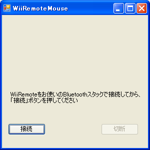
変更後の「Windows フォーム デザイナで生成されたコード」の一部(Form1.Designer.cs)[C#]
this.label1.Text = "WiiRemoteをお使いのBluetoothスタックで接続してから、\n「接続」ボタンを押してください";
this.Text = "WiiRemoteMouse";
このようなフィードバック開発は何度繰り返しても「終わり」というものはありません。しかしこの繰り返しループにかける時間で、プログラムの完成度はどんどんと高まっていきます。
その他ボタンアクションの実装アイディア
ユーザーテストをやってみると、この先、GlovePIEで実装したように、さまざまなボタンなどに沢山のアクションを割り当てていきたくなるとおもいます。残念なことに、ここから先はどんどんWiiRemoteとは直接関係ない話になってしまいますので適度に割愛しながら解説したいと思います。
例えば、ボタンアクションの開発について、[B]にもマウス右ボタンを割り当てたいとします。その場合、
if (ws.ButtonState.B) {
input[0].mi.dwFlags = 0x0008; //|右マウスダウン
SendInput(1, input, Marshal.SizeOf(input[0])); //|イベントを送信
} else {
input[0].mi.dwFlags = 0x0010; //|右マウスアップ
SendInput(1, input, Marshal.SizeOf(input[0])); //|イベントを送信
}
このように書き加えれば良いわけです。しかしこのように個々のボタンイベントについてif文で実装していくと、[A+B]などのボタンコンビネーションアクションなども加わっていくと、さらに複雑になっていきます(バグも増えます)。せっかくこの部分をクラス化したので、うまく再利用できる方法を考えたいところです。
本書の著者のひとりである小坂先生は、先ほど実装したStateのような文字列を拡張して「押されているキーを文字列として扱う」というアイディアで、以下のような方法で新しいクラスを設計してみました。これが正解かどうかは場合によりけりですが、良いアイディアだとおもいますので簡単に解説します(完成品は小坂研究室のHPからダウンロードできます★)。
まず現在のイベントクラスに「ButtonEvent」というクラスを追加します。
public ButtonEvent(String buttonName) {
this.isDown = false; //初期値はfalse
this.State = ""; //初期値は""
this.onButtonTime = 1000; //長押し時間
this.Flg = false; //初期値はfalse
this.ButtonName = buttonName; //ボタンの名前を取得
}
個々のボタンのキーとして文字列を定義しておきます。
Aボタン → A Homeボタン→ Home
Bボタン → B ↑ボタン → Up
1ボタン → One ↓ボタン → Down
2ボタン → Two ←ボタン → Left
-ボタン → Minus →ボタン → Right
+ボタン → Plus
そして[A]ボタンについて管理する場合、「A」という文字列を使ってButtonEventクラスをnewして「ButtonA」というクラスオブジェクトを作成します。この方法で、各々のボタンについてイベントを管理するクラス群ができあがります。
public ButtonEvent ButtonA = new ButtonEvent("A");
public ButtonEvent ButtonB = new ButtonEvent("B");
public ButtonEvent ButtonUP = new ButtonEvent("Up");
public ButtonEvent ButtonDOWN = new ButtonEvent("Down")
＜...以下すべてのボタンについてnewします＞
さらにButtonEventクラスに「GetOnButton(WiimoteState ws)」というStringを返すメソッドを用意し、押されたボタンのテキストを返します。以下のようにコーディングすることができます。
public String GetOnButton(WiimoteState ws) {
//Aが押された → " A"
//Bが押された → " B"
//A,Bが押された → " A B"
//A,B,1,2が押された → " A B One Two"
String onButtons = "";
if (ws.ButtonState.A) { onButtons += " A"; }
if (ws.ButtonState.B) { onButtons += " B"; }
if (ws.ButtonState.One) { onButtons += " One"; }
＜以下全てのボタン＞
return onButtons; //押されたボタンonButtonsを返す
}
このメソッドを、
if (this.ButtonName.Equals(this.GetOnButton(ws).Trim()))
…と使うことで、押されているボタンが注目したいボタンであるButtonNameと同じかどうか調べる事ができます。なお前後のスペースを除去してくれるメソッドTrim()やEquals()は、String型を継承しているので、追加実装なしで利用できます。
switch (ButtonA.onButton(ws))
とすることで、switch文を用いてそれぞれの[Down]、[Up]、[Hold]対応するコードを書いていくこともできます。
単純にif文の組み合わせで書いていく方法も悪くはないのですが、その後のチューニングでスパゲティ化を招き、ユーザーテスト時に「長押しの時間を変えたい」といった細かいチューニングの繰り返しに苦しめられることになるかもしれません。クラスを使った汎化、関数表現化ができればこういった問題もずいぶんと整理が付くようになります。
キーボード入力の発行
マウスとしての基本機能が完成すると、ユーザーテストによっては「キーボード機能も欲しい」という評価にもなるでしょう。
.NETには便利なAPI「SendKeys.SendWait()」というメソッドがあり、ここに発行したいキーボード入力を文字列を渡すことで、キーボード入力を発行することができます。例えば「Alt+F4」のような特別なキーが混ざった入力も発行できます。
[Alt+F4]を発行する例
SendKeys.SendWait("%{F4}");
カーソルキーやCtrlキーなどほとんどのボタンコンビネーションはこの方法で作り出すことができます。詳細はSendKeysについて調べると、全ての記述ルールを見つけることができるでしょう。
また使用環境によっては「このツール自身の表示を隠したい」という要求もあると思います。そんなときは、以下のコールでこのプログラムをプログラム自身から最小化することができます。
this.WindowState = FormWindowState.Minimized;
このように.NETの機能をフル活用し、WiiRemoteのイベントに対してマウスとキーボードの入力を割り当てたり、既に「ランチャー」で学んだアプリケーションの実行などを組み合わせたり、時には外部のAPIも活用しながら自分で好きな機能を盛り込んで、より誰かの役に立つ「WiiRemoteMouse」を作りこんでみてください。
装飾要素
インタラクション技術、特にGUI(グラフィカルユーザーインターフェース)にとって「見た目」は『重要な機能』です。ここでは「装飾要素」と呼んでいますが、決して軽く見積もっているのではありません。関数化をすることで、初期で作り込むのを避けたことを思い出しましょう。これは「概要設計」で基本機能を素早く実現し、ユーザーテストの繰り返しのループにおいて「十分な時間をかけて装飾したい」という目的によるものです。
もしこの開発の順番が逆だと、開発の初期で「見た目」にばかり時間を遣い、必要な技術課題の解決も済まないまま、ひいてはプロジェクトの進行を初期の段階でつまづかせることになります。「見た目が重要」だからこそ、いまユーザーテストのループの中で、思う存分実装しましょう。
数式によるLED出力関数
まずはちょっとお洒落にLEDの表示部分を実装します。
イメージとしてはLEDにはバッテリーの残量を｛25%以下、50%、75%、75%以上｝といった4段階で表示したいのでSetLEDs()関数を利用して、
LEDを4段階で表示させる例
wm.SetLEDs(1); //□■■■ 25％以下
wm.SetLEDs(3); //□□■■ 50％
wm.SetLEDs(7); //□□□■ 75％
wm.SetLEDs(15); //□□□□ 75％以上
このように表現していくこともできるでしょう。
しかし「switch〜case」文を使ってロジック(論理)で表現していく方法に対して、数式で1行にまとめるエレガントな方法もあります。今回は1行で書ける数式で実装してみます。
バッテリー残量をLEDに出力する数式(Form1.cs)[C#]
#region LED・装飾
public void EffectsOut(WiimoteState ws) {
//25%ずつLEDを表示させる
wm.SetLEDs((int)Math.Pow(2.0f, (int)(ws.Battery / 25) +1 ) - 1);
}
#endregion
たった1行の式ですが、以下のような意味を持っています。
バッテリーの値は[0＜Battery＜100]のfloat型で手に入りますので、それを25で割って、整数化(小数点以下を切り落とし)します。するとバッテリーの残量に応じて「0,1,2,3」という整数になります。nを自然数(1,2,3,...)とするとき、2のべき乗[2^n]は「2,4,8,16,...」という値をとりますので、そこを-1してあげることで、必要な「1,3,7,15」という4つのLED出力用の整数を得ることができます。
このように法則性があるものは可能な限り数式、つまり関数で表現できるようにするクセをつけると、コーディングも驚くほど短くなりますので、デバッグするときも見落としが減ります。何より学校で学んだ数学が非常に役に立ちます。「数学」というよりも「算数パズル」のようなものなので、無理して関数化するのではなく『楽しんで解いてみよう！』というところでしょうか。
コーディング文化の今昔
インタラクティブ技術をプログラム化するとき、例えばゲーム開発や研究開発において「とりあえず完成した状態」から、そのチューニングをしていく上で関数化、言い換えれば「経験的なロジックを数学で扱う習慣」をつけることは非常に重要です。
本書に掲載しているプログラムは紙面ですので、できるだけ掲載するコードの行数に無駄が無く、かつよりよい理解のために流れを追いやすく掲載するようにしています。これは筆者が小〜中学生の頃流行していた「マイコンBASICマガジン」(電波新聞社)の考え方を採用しています。当時、良質なプログラムの主な流通方法はWebや電子メールではなく「紙面」でしたので『いかに短くて美しいコードを書くか』という、今から考えると恐ろしくストイックなコーディングスタイルが流行していたわけです。加えて、BASICマガジンは月刊誌でしたので、適度な締切や、編集部の妙なノリが、品質な高い「みんなで作っていく文化」を作り出していました。
このような「集合知」や文化…もっと高尚な言い方をすれば「集合知による創発的コーディング」、最近の流行で表現すれば「『ニコニコ動画・技術部』で作ってみた」がかなり近い感覚でしょう。『ニコ動』でのインタラクティブ技術に関する注目は非常に高いものがあります(みんなこんな事も知らないのか…と驚くことも多いのですが！)。
そして本書の読者が『ニコ動文化』に貢献できることも大きいとおもいます。皆さんもぜひ、いろんな作品や活動を映像化して、衆目にさらしてみるとよいでしょう。「すげwww！」と賞賛されたあとに、勢い余って公開したプログラムが「何このスパゲティコード!!」とガッカリされないように、再利用しやすく、他人の勉強になるコーディングスタイルを極めてみてみるのもカッコイイとおもいます。
赤外線品質を向上
まずユーザービリティ向上にも関係する要素として、赤外線の品質を向上させたいとおもいます。現状のプログラムだとマウスカーソルはガタガタしているはずです。赤外線を手で隠したりして、よく様子を観察するとわかるのですが、センサーバーの2点のLEDのうち「どちらか1点」がそのときの状況で採用されているのが原因ではないでしょうか。現状のプログラムでは「最初に見えた1点」をマウスカーソルの座標に変換していますので、細かい操作をしようとすると、隣にある「2つ目の赤外線」邪魔をして、値が飛んでしまい安定感がなくなっているのです。
このような状況に対するひとつの解としては「2つLEDが見えたときは右にある赤外線を採用」といったロジックでルールを作ることです。
赤外線マウスの安定化(Form1.cs)[C#]
#region 赤外線でマウスカーソル移動
public void IR_Cursor(WiimoteState ws)
{
ScreenSize.X = Screen.PrimaryScreen.Bounds.Width; //画面サイズ横幅
ScreenSize.Y = Screen.PrimaryScreen.Bounds.Height; //画面サイズ縦幅
//赤外線座標(見えたときだけ更新)
float Ix1 = 0.5f, Iy1 = 0.5f, Ix0 = 0.5f, Iy0 = 0.5f;
float Ix, Iy; //赤外線座標の平均
int px, py; //最終的なマウスカーソルの位置
if (ws.IRState.IRSensors[1].Found) {
Ix1 = ws.IRState.IRSensors[1].Position.X;
Iy1 = ws.IRState.IRSensors[1].Position.Y;
Ix0 = ws.IRState.IRSensors[0].Position.X;
Iy0 = ws.IRState.IRSensors[0].Position.Y;
//Ix1,Iy1に大きい方(左)を格納したい
if (Ix1<Ix0) {
Ix0 = Ix1; Iy0 = Iy1;
Ix1 = ws.IRState.IRSensors[0].Position.X;
Iy1 = ws.IRState.IRSensors[0].Position.Y;
}
Ix = Ix0; Iy = Iy0; //ここで平均をとっても良いだろう
px = (int)(ScreenSize.X * (1 - Ix)); //X座標は反転
py = (int)( Iy * ScreenSize.Y);
//マウスカーソルを指定位置へ移動
System.Windows.Forms.Cursor.Position = new System.Drawing.Point(px, py);
}
}
#endregion
実行してみると(環境にもよりますが)バタバタ感は多少は改善されているのではないでしょうか。このパートはこのようなチューニング作業、改善を繰り返すことで、ユーザービリティ向上に大きく貢献できる可能性があります。例えば、赤外線が見えなかったときの処理として、過去の値を使ったり、平均をとったり、履歴をとったり…という処理を上のコードを基本として追加することができます。
環境や状況によってより多くテストをし、アイディアを盛り込んでいくことで、不安定な動作を軽減することができるでしょう。
文字列を描画したい
PictureBoxにカッコイイ文字列を表示したい！と思うこともあるでしょう。特に先ほどの赤外線品質の向上をチューニングする上では、各々のマーカーの値が表示できると、作業がはかどります。しかしメッセージボックスやラベル文字列では情報の量が多い上に速すぎて、役に立ちません。そこで、今回は特にRawPosition(生の測定値)をPictureBoxに画像として描画します。これはプログラマにとっては「作業の効率化」の一環ですが、「見た目にカッコイイ」という「機能」も併せ持ちます。
バッテリー残量をLEDに出力(Form1.cs)[C#]
#region フォーム描画関数DrawString版
public void DrawForms(WiimoteState ws)
{
//グラフィックスを取得
Graphics g = this.pictureBox1.CreateGraphics();
Font drawFont = new Font("Arial", 9); //|フォントを指定
SolidBrush drawBrush = new SolidBrush(Color.White); //|色は白
String drawString = "Text"; //|描画文字列
//|描画位置を扱うPoint型変数
System.Drawing.Point pos = new System.Drawing.Point(0, 0);
int irsize; //|検出した赤外線マーカーのサイズ
g.Clear(Color.Black);//画面を黒色にクリア
//もし赤外線を１つでも発見したら
if (ws.IRState.IRSensors[0].Found)
{
//マーカ0の描画
pos.X = (int)(ws.IRState.IRSensors[0].Position.X * 256);
pos.Y = (int)(ws.IRState.IRSensors[0].Position.Y * 128);
irsize = ws.IRState.IRSensors[0].Size + 5;
g.FillEllipse(Brushes.Red, pos.X, pos.Y,irsize, irsize);
drawString = "[" + ws.IRState.IRSensors[0].RawPosition.X + ", "
+ ws.IRState.IRSensors[0].RawPosition.Y + "]";
g.DrawString(drawString, drawFont, drawBrush, pos);
//マーカ1の描画
pos.X = (int)(ws.IRState.IRSensors[1].Position.X * 256);
pos.Y = (int)(ws.IRState.IRSensors[1].Position.Y * 128);
irsize = ws.IRState.IRSensors[0].Size + 5;
g.FillEllipse(Brushes.Blue, pos.X, pos.Y, irsize, irsize);
drawString = "[" + ws.IRState.IRSensors[1].RawPosition.X + ", "
+ ws.IRState.IRSensors[1].RawPosition.Y + "]";
g.DrawString(drawString, drawFont, drawBrush, pos);
}
g.Dispose();//グラフィックスの解放
label1.Text = "IR[0] " + ws.IRState.IRSensors[0].RawPosition.ToString()
+ "\nIR[1] " + ws.IRState.IRSensors[1].RawPosition.ToString();
}
#endregion
ここではDrawForm()は「DrawFormOrg()」としてコピー＆ペーストでそのまま残して、テキスト表示用機能を追加しています。「マーカー0の描画」というあたりから、大幅に書き換えていますが、より読みやすくなっているはずです。せっかくPictureBoxに情報を表示するので、楕円を描くFillEllipse()の第4、第5引数に、検出された赤外線の大きさを与えて、意味をもたせています。
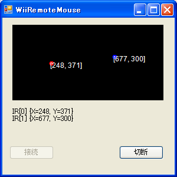
実行してみましょう。センサーバーに近づけるとマーカーを示す円が大きめに描画されます。このように、赤外線の様子をじっくり観察できるので、ユーザーの動作も理解しやすくなり、意外なチューニングのヒントになります。
テキストが表示できるようになると、便利で格好いいことがいろいろやれるようになりますので活用しましょう。
例の「かたむく指」を描画
最後に、WiiRemoteの「傾きを表示」できるようにします。あのWii本体でよく出てくる「指カーソル」で表示されているように、WiiRemoteの傾きを画面で表現できると、よりWiiRemoteらしくなります。しかしあの指ポインタの傾きは加速度センサーによるものではないようです。加速度センサーの値を使わなくても、センサーバーからの2つのマーカー座標が取得できているなら「その2点をつなぐ線の傾き」で表現することができます。
また、せっかくの.NETによる開発ですから、ネットワークを使った技術も紹介します。具体的には「指カーソル」に使う画像を、ハードディスク内のファイルではなくインターネット上から取得して利用します。
こちらの画像ファイルは著者のホームページ★「http://akihiko.shirai.as/projects/WiiRemote/finger.bmp」にておいてあるものです。Internet ExplorerなどのブラウザでこのURLを指定すると、画像を表示できます。ちなみにこの指カーソル画像はペイントを使って5分ぐらいで描いたものです野で、皆さん自身で用意していただいてもかまいません。ただし背景を「透明」に抜くために、決めた1色で塗っています(通称「抜き色」)。
「回転する指」をURLから取得して描画(Form1.cs)[C#]
namespace WiiRemoteMouse {
public partial class Form1 : Form {
Wiimote wm = new Wiimote(); //Wiimoteクラスを作成
ButtonEvents wbe = new ButtonEvents(); //ボタンイベントクラスを作成
Bitmap bmp; //|指ポインタ描画用
System.Drawing.Point ScreenSize; //画面サイズを格納
Boolean isConnected = false; //WiiRemoteが接続されたか
public Form1() {
InitializeComponent();
//グラフィックス下ごしらえ
String url = "http://akihiko.shirai.as/projects/WiiRemote/finger.bmp";
using (System.Net.WebClient wc = new System.Net.WebClient())
using (System.IO.Stream st = wc.OpenRead(url))
bmp = new Bitmap(st);
// ※もちろんハードディスクから読むことも可能
// bmp = new Bitmap("c:￥￥WiiRemote￥￥yubi.png");
bmp.MakeTransparent(bmp.GetPixel(0, 0)); //抜き色の指定
＜中略＞
#region フォーム描画関数Finger版
public void DrawForms(WiimoteState ws) {
＜中略＞
double radians, angle = 0.0f;
//赤外線が2つ見えたらその中間をとる
if (ws.IRState.IRSensors[1].Found) {
pos.X = (int)(ws.IRState.IRSensors[0].Position.X * 256
+ ws.IRState.IRSensors[1].Position.X * 256) / 2;
pos.Y = (int)(ws.IRState.IRSensors[0].Position.Y * 128
+ ws.IRState.IRSensors[1].Position.Y * 128) / 2;
radians = Math.Atan2(ws.IRState.IRSensors[0].Position.Y - \
ws.IRState.IRSensors[1].Position.Y,
ws.IRState.IRSensors[0].Position.X - ws.IRState.IRSensors[1].Position.X);
angle = radians * (180 / Math.PI); //ラジアン→角度変換
} else {
//赤外線が1つなら、1つめの値を採用する
pos.X = (int)(ws.IRState.IRSensors[0].Position.X * 256);
pos.Y = (int)(ws.IRState.IRSensors[0].Position.Y * 128);
}
double d = angle / (180 / Math.PI); //角度→ラジアン変換
//2D回転変換
float x = pos.X;
float y = pos.Y;
float x1 = x + bmp.Width * (float)Math.Cos(d);
float y1 = y + bmp.Width * (float)Math.Sin(d);
float x2 = x - bmp.Height * (float)Math.Sin(d);
float y2 = y + bmp.Height * (float)Math.Cos(d);
//新しい描画位置
System.Drawing.PointF[] destinationPoints =
{new System.Drawing.PointF(x , y ),
new System.Drawing.PointF(x1, y1),
new System.Drawing.PointF(x2, y2)};
//画像を表示
g.DrawImage(bmp, destinationPoints);
//＜終了時はbitmapオブジェクト等の廃棄などを忘れずに＞
＜以下略＞
プログラム実行時、DrawForms()は秒間数10回はまわってきますので、毎回の描画時にURLから読み込むと、動作がとても遅くなってしまいますので、初期化時にロードしています。このとき、インターネットに接続されており、正しくURLから画像ファイルが取得できないとエラーになります。「bmp.MakeTransparent()」で「抜き色」として、画像の一番左上の色を指定しています(これを指定しないと「背景が灰色の指」が表示されます)。今回はURLからBMP画像を読み込んでいますが、ハードディスク内のPNG画像を読み込む場合のソースコードもコメントに記述しておきました。
赤外線2点から傾きをとる方法は「Math.Atan2()」を使います。これはアークタンジェントという三角関数で、tan(余弦)の定義から与えた直角三角形のなす角を得る関数です。180度を超えなければ問題なく安定して角度が取得できます。
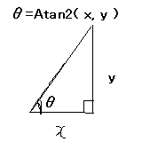
Atan2で取得した角度はラジアン(変数radians)で渡されますので、理解しやすいよう角度(変数angle、単位としてはdegree)に変換する数式も用意しておきました。最後に「2D回転変換」というコードで三角関数による変換処理を実施して、DrawImage()で読み込んだ画像を描画しています。
数学っぽいことが沢山出てきて頭を抱えている人もいるかもしれませんが、内容的には高校1〜2年程度の数学の教科書に載っていることを応用しているだけです。コンピューターグラフィックスプログラミングは数学を楽しく活用できる珍しい例ともいえます。「数学なんて嫌いだ」という読者の方は、良い機会ですからアレルギーを出さずに「楽しんで」取り組んでみてください。
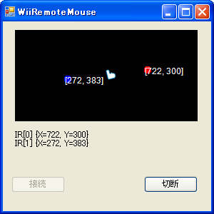
「指カーソル」が見事に回転します。画像ファイルも存在しないのに、インターネット経由でBMPファイルを読み込んでいるところにも注目です。指の傾きは、一見何に使うのかわかりませんが「WiiRemoteを使っている」という感じがしますし、もしかしたら角度を積極的に使ったコマンドや、ベクトルを利用した物理的なインタラクションなどに活用できるかもしれませんね。
以上で、装飾要素に関する解説を終わります。「装飾要素」は事務系アプリケーションでは文字通りデコレーションでしかないのですが、インタラクションが重要になるプログラムでは非常に重要な要素になります。また、プログラミングの実装の仕方によっては、装飾要素がプログラム全体のパフォーマンスを低下させたり、ユーザーインタラクションを向上させたりと、奥深いプログラミング要素になることが体感できたのであれば幸いです。
以上で、「WiiRemoteMouse」の開発は終わります。この章での開発を通して、単にプログラミングだけではなく、多くのことを学ぶことができたのではないでしょうか？
ここで完成とはいえないかもしれません、まだまだ実装したい機能やチューニングしたい要素がたくさんあると思います。例えばこの「WiiRemoteMouse」を身体にハンディをもった人に使ってもらうのか、自分がソファーに寝そべりながらネットを楽しむために使うのか。そのためにどのような改善ができるのか。このような課題に対して、万能かつ確実な回答はありませんが、今まで学んだことを応用し、想像力を働かせればすれば、必ずゴールにたどり着けるでしょう。つまり、作った本人が納得できて、かつユーザーは「さわっていて楽しいプログラム」になるということです。
この実践的なプログラミング体験を通して、皆さんの可能性は確実に広がったはずです。ぜひ、繰り返し時間をかけてWiiRemoteをつかったインタラクティブ技術プログラミングの醍醐味を楽しんでください。次章「演習問題」にはWiiRemoteを活用したイマジネーションを爆発させるための刺激的なスパイスを沢山紹介しています。それぞれの課題に必ずしも「模範回答」が用意されているわけではありませんが、今のあなたであれば、自分自身で楽しみながら学習し、前に進めていくことができるはずです。